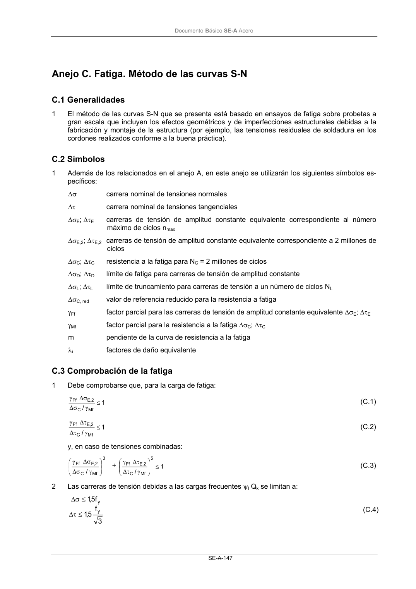

DB-SE-A · Fragmento de PDF p149 · versión 2007-10-23 · capa oficial
Formatos: JSON compacto · Markdown · PDF fuente
Ámbito del documento · texto del ámbito · documento y tablas
ID técnico a0209 · PDF pág. 149 · jerarquía no validada por persona · no es capítulo: sin_linea_de_encabezado · padre: raíz · literal original en el contenido: «Anejo C. Fatiga. Método de las curvas S-N C.1 Generalidades»
Anejo C. Fatiga. Método de las curvas S-N C.1 Generalidades C.1 Generalidades 1 El método de las curvas S-N que se presenta está basado en ensayos de fatiga sobre probetas a gran escala que incluyen los efectos geométricos y de imperfecciones estructurales debidas a la fabricación y montaje de la estructura (por ejemplo, las tensiones residuales de soldadura en los cordones realizados conforme a la buena práctica).

PDF fuente redistribuible: copia fiel enlazada en esta página (SHA256 verificado).